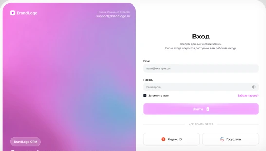
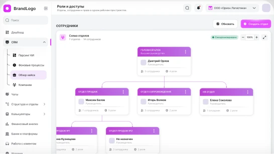
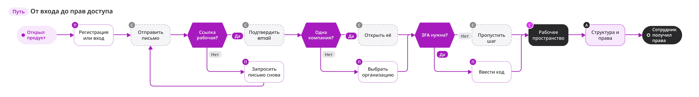
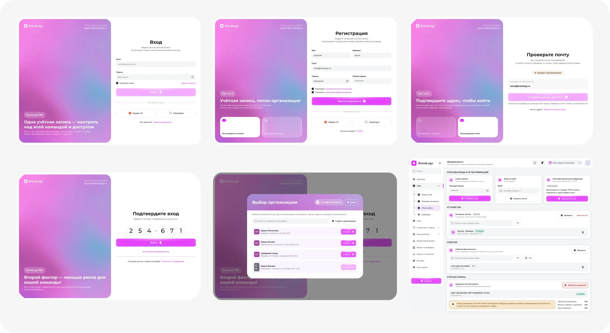
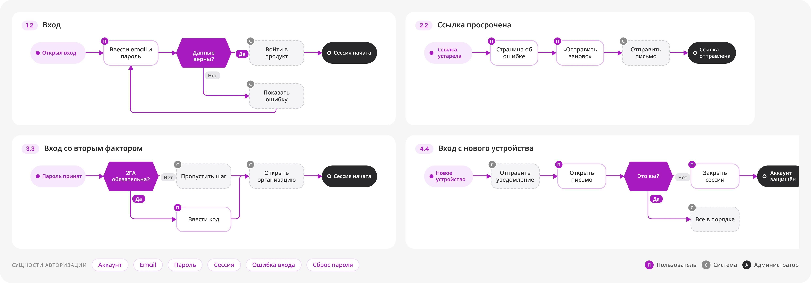
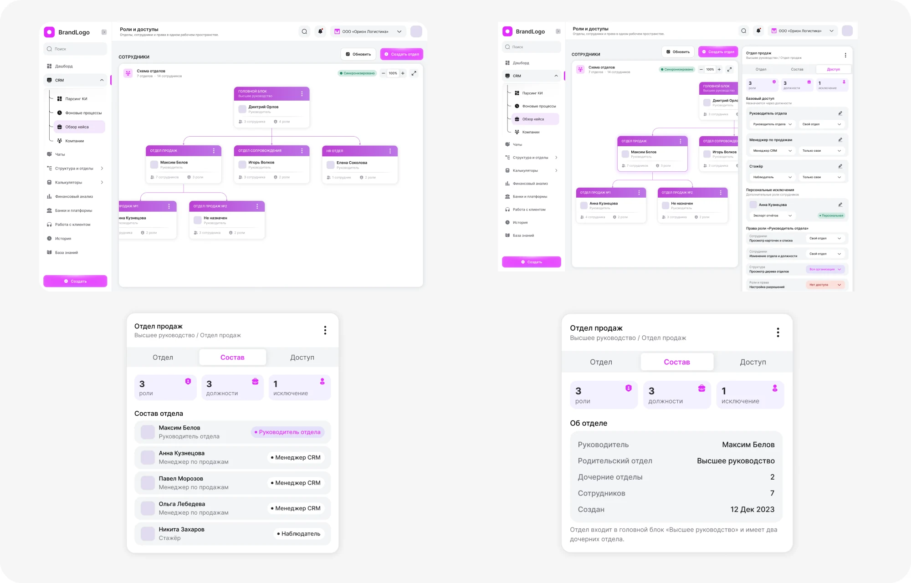
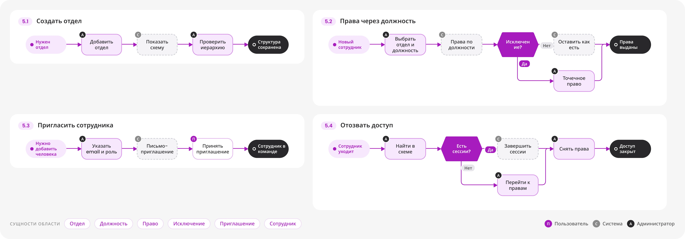

B2B CRM · WEB · В ПРОЦЕССЕ · NDA
CRM с нуля: от безопасного входа до структуры компании
BrandLogo CRM - рабочее пространство для команд, которые подбирают клиентам банковские и финансовые продукты. Проектирую продукт с нуля: фундамент, дизайн-систему и ключевые сценарии.


МОЯ РОЛЬ
Я вёл дизайн CRM от исследования до готовых интерфейсов и дизайн-системы. Вместе с PM, аналитиками и разработчиками превращал рабочие процессы команды в понятные экраны, а на проверках с сотрудниками и менеджерами уточнял решения.
КОРОТКО О КЕЙСЕ
Брокеры работают в россыпи инструментов: Excel, мессенджеры, почта, банковские порталы. Мы строим единое рабочее пространство, где у компании есть своя изолированная организация, структура отделов и понятные права. Первый этап - фундамент: вход, организации, безопасность и доступы, на которых вырастет вся CRM.
Для кого и зачем
Продукт для компаний, которые помогают клиентам получать банковские гарантии, кредиты, лизинг и другие финансовые продукты. В одной команде работают продажи, сопровождение клиентов, аналитики и руководители.
Что узнали и как шли к решению
Стартовали с исследования: говорили с владельцами и менеджерами, разбирали процессы и смотрели, как устроены аналоги.
Менеджеры бросают сложные входы, а владельцам нужна жёсткая защита.
Обязательный второй фактор для владельцев, понятный и быстрый вход для остальных.
Владельцы ведут несколько юрлиц и не хотят несколько аккаунтов.
Один аккаунт, выбор организации после входа, полная изоляция данных.
Руководители мыслят структурой компании, а не списком разрешений.
Схема отделов как главный инструмент и права через должности с точечными исключениями.
5 областей - один сквозной путь
Продукт строится вокруг работы с клиентом: шесть областей, фундамент уже спроектирован. Ниже сквозной сценарий от входа до прав доступа и роли, а в решениях по каждой области набор сценариев.

Два блока фундамента CRM
Авторизация и безопасность собраны в один блок, затем структура компании и права. Для каждого: решение, эффект и схемы сценариев.
Авторизация и безопасность аккаунта
Вход, подтверждение email, второй фактор и выбор организации: быстро и без тупиков, но с защитой, достаточной для финансовых данных.
Вход через Яндекс ID и Госуслуги и регистрация в два шага, подтверждение email с таймером и новым письмом, 6-значный код 2FA, выбор организации и единый экран безопасности: сессии, журнал событий, смена пароля.
В тесте прототипа 7 из 8 пользователей прошли регистрацию без подсказок, и никто не потерялся на подтверждении email. Цели: до 2 мин до первого входа, 70% включают 2FA в первый месяц, −50% обращений в поддержку по входу.


Структура и права: схема отделов вместо таблицы
Руководители мыслят структурой компании, поэтому права настраиваются через отделы, должности и точечные исключения.
Визуальная схема отделов, панель отдела с вкладками «Отдел / Состав / Доступ», права через должности, персональные исключения и три уровня доступа к полям: просмотр, маска, скрыто.
В тесте 6 из 8 владельцев собрали схему без помощи. Цель: настройка структуры за 15 минут вместо нескольких часов.


Что уже видно и к чему идём
Проект в разработке: первые сигналы по тестам прототипов и целевые показатели. Итоговые метрики добавлю после релиза.
Что я вынес из проекта
Фундамент собран: вход, организации, безопасность и схема отделов с правами. 50+ компонентов UI-kit готовы к разработке, а на тестах 7 из 8 прошли регистрацию и 6 из 8 владельцев собрали схему без помощи.
Совместить жёсткую защиту финансовых данных с быстрым входом, а структуру компании с понятной моделью прав. Пришлось уйти от таблицы разрешений к схеме отделов.
Ядро CRM: компании и обзор кейса, парсинг КИ и фоновые процессы, расширение UI-kit (таблицы, фильтры, карточки) и тесты на реальных сценариях.
Дашборд с метриками команды, калькуляторы, банки и платформы, чаты и работа с клиентом, метрики использования и итоговые результаты.
Другие проекты
Можете ознакомиться с моими другими проетами